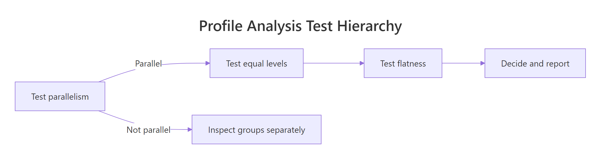

Profile Analysis in R: Repeated Measures as a Multivariate Problem
Profile analysis treats a set of repeated measurements as a single multivariate response, then asks three connected questions: are group profiles parallel, are their levels equal, and is the average profile flat? It is the multivariate alternative to repeated-measures ANOVA when the outcomes share a common scale.
What is profile analysis and how do you visualize it?
Profile analysis fits a single MANOVA-style model to a vector of commensurate measurements, treating the repeated outcome as multivariate rather than splitting it into separate within-subject ANOVAs. The payoff is a coherent framework for three hypotheses you usually care about. Before any test, plot the profiles. The shape of the lines tells you, at a glance, which of the three hypotheses is plausibly false.
Two lines, two stories. Drug A drops sharply from week 1 to week 8, while drug B barely moves. They start at the same level around 80 but diverge from week 2 onward, and neither line is flat. Profile analysis turns these three visual judgements into formal statistical tests, in that exact order: parallelism, levels, flatness.
The data sit in wide format, with one row per subject and one column per time point. That layout is what the three tests will operate on.
Forty subjects, four repeated measures, two groups. That is the generic shape profile analysis expects.
Try it: Modify the means for drug B so it ends higher than drug A by week 8 (a crossover pattern), then redraw the plot. What does the eyeball verdict on parallelism look like now?
Click to reveal solution
Explanation: Mirroring the means produces an X-shape. Visually, parallelism is wildly violated, which is exactly what the parallelism test will pick up.
How do you test parallelism between groups?
Parallelism is the multivariate phrasing of "no group by time interaction." If two profiles are parallel, the change from week 1 to week 2, the change from week 2 to week 4, and so on, are all the same across groups. Compute those successive differences for each subject and run a MANOVA with group as the predictor. A significant result rejects parallelism.
Wilks's lambda is small and the p-value is microscopic. The mean differences across weeks are not the same in the two groups, so the lines are not parallel. That matches the eyeball: drug A's slope is steep; drug B's is nearly flat.
Try it: Regenerate the data so both drugs have the same slope (parallel profiles), then re-run the MANOVA on differences. The p-value should now be unimpressive.
Click to reveal solution
Explanation: Mean differences match across the two groups, so the test cannot reject parallelism. The non-significant p-value supports the visual story that the lines are parallel.
How do you test for equal levels?
The equal-levels test asks whether one profile sits uniformly higher than the other. Average each subject's responses across time, then run a univariate ANOVA on those means. The interpretation is clean only when parallelism plausibly holds, because if profiles cross, the "average level" hides direction-of-effect changes over time.
The F-statistic is huge: drug A's per-subject average sits roughly 10 points below drug B's, well outside what 40 subjects of within-group noise can explain. So if we did trust the parallel-lines summary, we would say the two drug profiles are at different levels. We already know parallelism failed, so that single number is misleading on its own; pair it with the parallelism rejection to tell the whole story.
Try it: Shift drug B's weekly means up by 5 points (so the level gap widens further). Confirm the row-means ANOVA returns an even larger F.
Click to reveal solution
Explanation: A bigger between-group separation in row means produces a larger F statistic. The shape of the test is unchanged; only the effect size grows.
How do you test for profile flatness?
Flatness asks whether the pooled profile, averaged across groups, is constant over time. If it is, nothing changed between weeks 1 and 8. We test it with a one-sample Hotelling's T² on the difference vector, asking whether its mean is jointly zero.
The Hotelling T² statistic measures the squared distance between the observed mean of differences and the zero vector, scaled by the inverse of their covariance matrix. The F transformation gives a familiar reference distribution.
$$T^2 = n \, \bar{d}^{\top} S_d^{-1} \bar{d}$$
$$F = \frac{n - p}{p \, (n - 1)} \, T^2 \sim F_{p, \, n - p}$$
Where:
- $\bar{d}$ = mean vector of successive differences across all subjects
- $S_d$ = sample covariance matrix of those differences
- $n$ = total number of subjects (across groups)
- $p$ = number of differences (one less than the number of time points)
If the differences average to zero in every direction, the profile is flat. Any consistent rise or fall pushes T² away from zero.
T² is huge and the F-equivalent is far in the tail of its reference distribution. The pooled profile is decidedly not flat: averaged across drugs, scores drop substantially from week 1 to week 8.
Try it: Build flat profiles where every week has the same mean, then confirm the flatness test fails to reject.
Click to reveal solution
Explanation: When every week shares the same mean, the differences scatter around zero with no consistent direction. T² stays small and the test does not reject flatness.
What is the testing hierarchy and how do you interpret the results?
Profile analysis is not three independent tests run in parallel. There is a recommended order, and your interpretation of the second and third tests depends on what the first one tells you.

Figure 1: The order in which to run profile-analysis tests, and what to do when parallelism fails.
Test parallelism first. If it holds, the lines have the same shape and the equal-levels and flatness tests have a clean group-comparison meaning. If parallelism fails, the lines fan out or cross, so a single between-group level statement no longer summarises them. In that case, examine the groups separately or report the interaction directly with a profile plot.
A small wrapper makes the workflow reproducible and easy to embed in a report.
All three tests reject. Combined with the plot, the verdict is straightforward: drug A and drug B follow non-parallel profiles, drug A sits lower on average, and the pooled profile is decidedly not flat. The headline finding is the parallelism rejection (the interaction); the level and flatness numbers are supporting evidence.
profileR::pbg(data, group) runs all three tests in one call. It is convenient for production reports but is not currently available in this in-page interactive R environment, so the manual approach above is what runs here. If you have profileR installed locally in RStudio, the output mirrors the wrapper above.Try it: Use the wrapper on the original drug data and write a one-sentence verdict on each row.
Click to reveal solution
Explanation: Parallelism: rejected, the two drugs change at different rates. Equal levels: rejected, drug A sits lower on average across weeks. Flatness: rejected, the pooled profile descends over time. Lead the report with the parallelism rejection.
Practice Exercises
These capstone problems combine the three tests with new data. Use distinct variable names so they do not overwrite the tutorial state above.
Exercise 1: Three-group case with one outlier trend
Build a three-group, four-week dataset where two groups follow gentle declines and one group rises sharply over time. Run all three tests and explain which group is responsible for the parallelism rejection.
Click to reveal solution
Explanation: Group C climbs while A and B fall, so parallelism is rejected and the plot makes the culprit obvious. With more than two groups, the parallelism test is global, so you should always pair it with a profile plot to find which group breaks the pattern.
Exercise 2: Verbose wrapper
Extend profile_tests() to print a verbal verdict (parallel/level/flat with one-line interpretation) instead of returning a data frame. Keep the underlying computations identical.
Click to reveal solution
Explanation: Returning a sentence per test makes the wrapper self-documenting in reports. The numeric data frame is still returned invisibly for downstream code.
Complete Example
A full profile analysis of the drug data, end to end:
That is the full pipeline you would lift into a report: simulate or load, plot, run the three tests, and write a one-paragraph interpretation that leads with the interaction.
Summary
| Test | Hypothesis | R approach | When to interpret |
|---|---|---|---|
| Parallelism | Group profiles have the same shape | manova(diffs ~ group) |
Always, this is the gate |
| Equal levels | Average level is the same across groups | aov(rowMeans ~ group) |
Only if parallelism plausibly holds |
| Flatness | Pooled profile is constant over time | One-sample Hotelling T² on differences | Always, but rarely the headline result |
Three takeaways:
- Profile analysis is the multivariate counterpart of repeated-measures ANOVA when measurements share a scale.
- Always test parallelism first. Equal levels and flatness depend on it for clean interpretation.
- The whole workflow needs only base R
manova(),aov(), and a small Hotelling T² snippet, with no specialised packages required.
References
- Tabachnick, B. G., and Fidell, L. S., Using Multivariate Statistics, 7th edition. Pearson (2019). Chapter on Profile Analysis. Link
- Johnson, R. A., and Wichern, D. W., Applied Multivariate Statistical Analysis, 6th edition. Pearson (2007). Chapter 6: Comparisons of Several Multivariate Means. Link
- Bulus, M.,
profileRpackage on CRAN. Profile Analysis of Multivariate Data in R. Link - Friedrich, S., Konietschke, F., and Pauly, M., Analysis of Multivariate Data and Repeated Measures Designs with the R Package
MANOVA.RM. arXiv preprint 1801.08002 (2018). Link - R Core Team,
manova()reference, R Documentation. Link - Phil Ender, Profile Analysis course notes, UCLA. Link
Continue Learning
- Multivariate Statistics in R: Distances, Mahalanobis & Hotelling's T², the parent tutorial covering the multivariate building blocks behind profile analysis.
- Hotelling's T² in R, the multivariate t-test that powers the flatness step, explained in depth.
- Repeated Measures ANOVA in R, the univariate sibling to profile analysis, useful when sphericity assumptions are tenable.